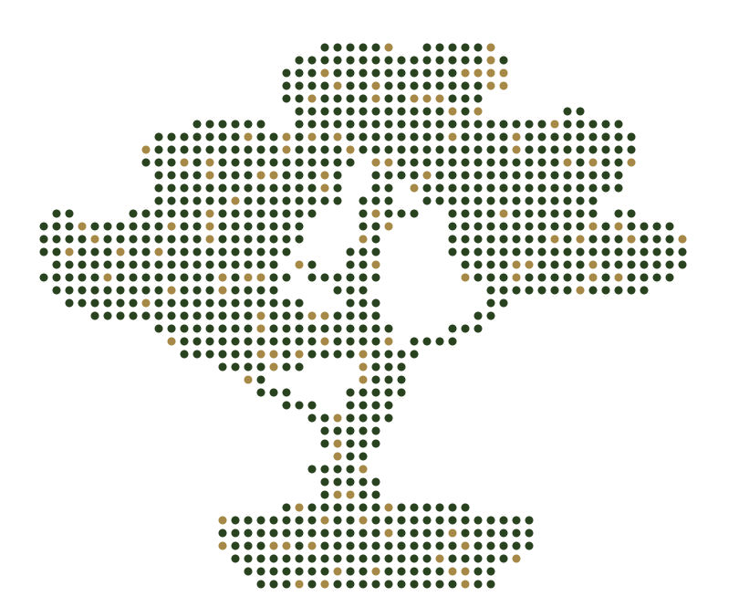

Ein neuer Weg beginnt.
Tastatur: ← → navigieren · Space / Enter nächste Folie · F Vollbild · Esc schließen
Grundlage: „Businessplan_DeinStart-up.pdf“, Abschnitte I–VIII, Fragen 1–27, und drei Bildanhänge. Der Validierungsanhang ist ein fiktives Muster; er enthält keine erhobenen Kundenantworten. Kosten und Umsätze sind Planwerte, mögliche Partner noch keine bestätigten Kooperationen.
Noch kein belegter Produkt-Markt-Fit. Fotoanalyse, digitaler Zwilling, AR, Raumscan und optionale Sensoranbindung sind das Entwicklungsziel.